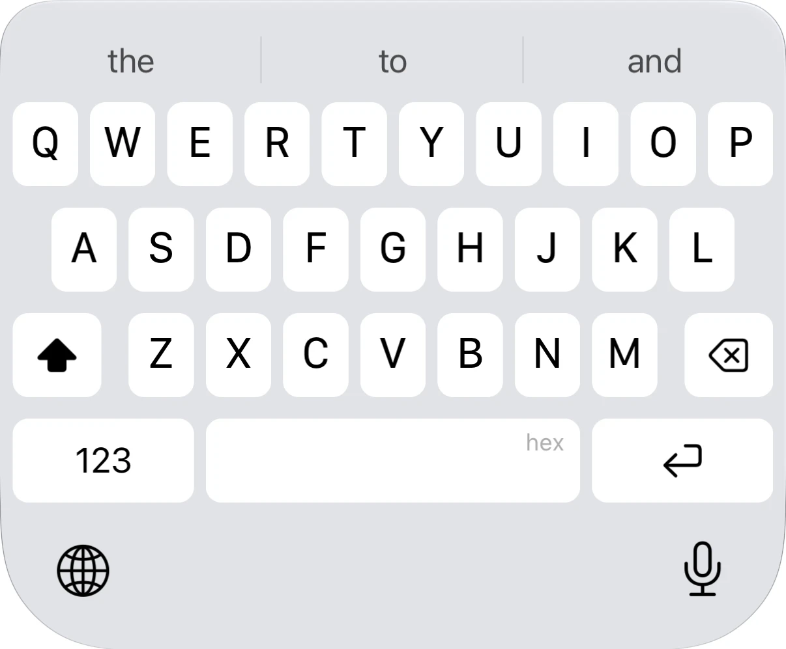
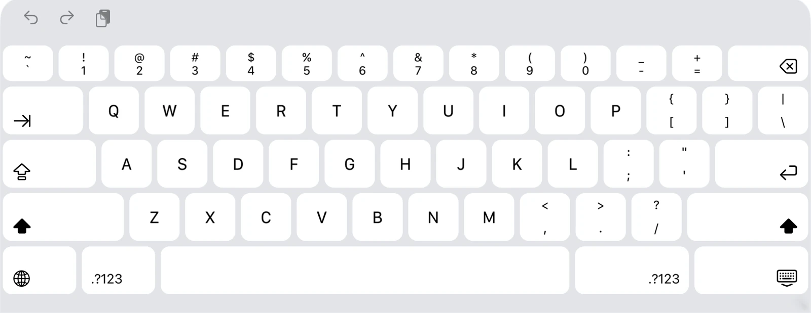
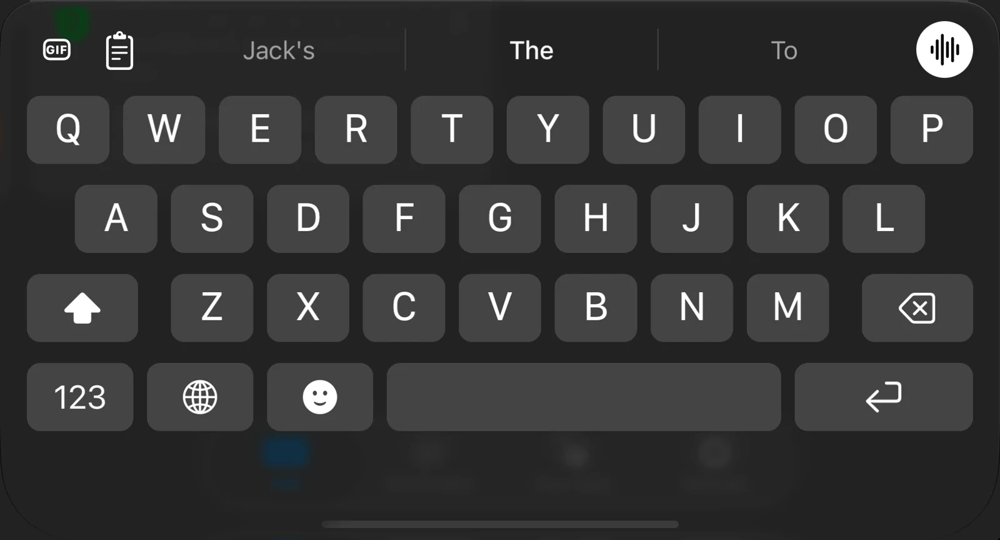

Keep what you copy.
Clipboard history in the keyboard and app, with pinned items and full text kept for large copies.
That’s what we’re building. A keyboard that learns your thumbs, writes what you say, and earns its place on your iPhone and iPad.
Build iikbApple, Raycast: we’re coming for the space bar.
iPhone, iPad, and the Duo folded or open. Pick a layout to take a closer look.



Keyboard layout captures from the simulator. The app continues to evolve.
The keys stay familiar. Their touch targets learn where you actually land, then follow as your grip changes.
Autocorrect reads your taps, not just the nearest letter. Next-word suggestions combine an on-device language model with the words and phrases you keep.
Missed a space? The suggestion bar can offer the words you meant. Your Taps shows where you press and what the keyboard has learned.
Recorded benchmark: the same simulated taps through the nearest key and Apple’s spell checker score 85.2%. This compares a spell-checker baseline, rather than Apple’s complete keyboard.
500 phrases typed twice, 5,428 words, with deliberately biased taps and no manual corrections. Recorded results · Method and development log.
On-device dictation. Your choice of voice model. Your punctuation, editing, and writing style.
Start and stop from the keyboard. Cancel a recording without inserting it. Keep the microphone ready between dictations, then switch it off in the app.
Transcripts keep the words and available recordings for review. Speech recognition runs on your device with NVIDIA’s Parakeet through FluidAudio, or Apple’s model.
Clipboard history in the keyboard and app, with pinned items and full text kept for large copies.
Emoji suggestions as you type, searchable emoji with skin tones, and GIF search beside your words.
Five themes, key spacing and roundness, haptic strength, a number row, and one-handed layouts.
Connect a source that reads the field you’re writing in and returns a hint above the keys. See the source API.


The keyboard’s look takes inspiration from Raycast.
Open source. MIT licensed. For iPhone and iPad on iOS 26 and later.
iikb is in active development and isn’t on the App Store yet. Build it from source and help make the keyboard better.
Build iikbEnglish typing today. Swipe typing is in development; more languages aren’t available yet.